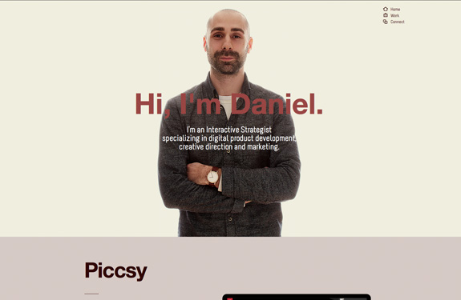

Salut, Je suis Eke.
Ètudiant en Multimédia à l’Université de Saint-Boniface, je me specialise en graphisme, web design,montage video, 3D et en
enregistrement sonnore.
LES SITES QUI M'ONT INSPIRE
- Daniel Ecklera
- Daniel Eckler est un entrepreneur spécialisé en dévéloppement de produits numeriques, direction créative et marketing. Son site portfolio ne s'affiche pas bien mais sa devrait ressember à l'image ci-dessous. Grace à son site j'ai pu choisie la couleur, le métaphore et la forme de ma page home. 
- derek boateng
- Derek Boateng est un artiste et designeur qui réside à Londre. Sa partie about (profile) m'a inspiré à faire le mien. Il y avait une belle séparation entre les informations.je me suis basé sur sa pour faire une bio, une partie pour les reseaux sociaux et le footer.
- Adam Hartwig
- Adam Hartwig est un designeur Anglais. j'ai tellement aimé son site. Mais La maniére dont il a presenté sa navigation m'a inspiré à faire le mien.